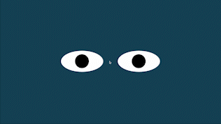

Eye Exercise
This code moves two HTML elements in response to the movement of the mouse on the page. As the mouse moves, the position of the balls changes to follow it, creating a visual effect where it appears as if the balls are following the mouse.
